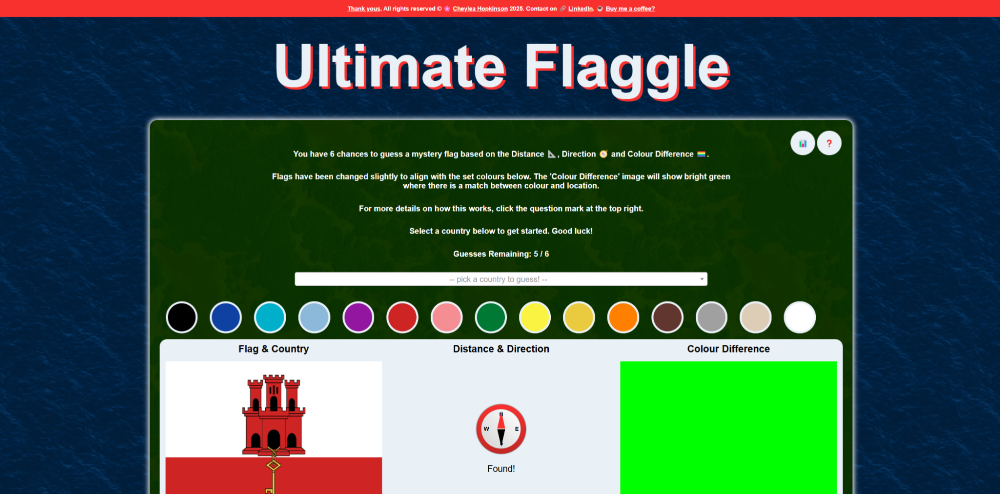

The Creation and Launch of Ultimate Flaggle
1th April 2025
Getting Started
It has been quite some time since I graduated, and I’ve been off and on working on something that I have been pursuing for pure fun. It all started when my partner James and I got into the Wordle and other NYT daily games. We were a bit late to the party, but making our streaks by midnight quickly became a daily routine. We enjoy them a lot.
But James, being an avid geography buff wanted more. He wanted to see if there were any fun versions of daily puzzles for flags. After some research (ie…googling “flagle”) we came across a couple of flag related wordle inspired games: https://www.flaggle.net/ and https://flagle.gg/ .
Flaggle is a version of a daily guessing country flag game, where when you guess the flag it will highlight green where the colours of the flag match:

This was a really fun and unique concept we really enjoyed. Guesses were unlimited until you got it correct.
Flagle is more traditionally like Wordle, in that you have six guesses to find the mystery country. After each guess, a section of the flag is revealed, as well as the distance and direction to the actual answer from the country you guessed.

We started playing both of these every day, but I was quite terrible. We loved the premise of Flaggle, but we found it very difficult to guess flags with no geographical location clues or guess limit. We would sometimes work on it for over an hour. In the end, we had to drop it on the daily, and just stick with Flagle. We liked Flagle too, but there was something about Flaggle that was enjoyable - such a cool concept and we missed it.
I was at a loose end after submitting my dissertation, and it was around the spring of 2024 I started to wonder…what would it be like if we could make a combined flaggle…a better flaggle…an…ultimate…flaggle??
On April 12th 2024, I began development on my app.
Writing this now…I can’t believe it was close to a year ago! But development of this app was certainly not consistent over this last year.
Back End vs Front End
So confession, I hate front end coding. But my first step with this app was the build out the back end, I needed something that could calculate distance and direction, and sometthing that could compare flags. Not to mention scripts to process the flags sensibly into a set palette of colours, same dimensions and actually find images of all flags and their coordinates.
The initial iteration for this did not take that long, by May I had a working back end first draft. It took a while to get things working initially, but I was able to get distance, direction and colour difference calculated, and at least shown to me in the terminal.
Oh but then came the front end. Man did I put this off! You can’t have an Ultimate Flaggle app without a front end. I briefly worked on it in October, adding an extremely basic start.

But it wasn’t until March of 2025 that I finally picked it up again and forced myself to get through the front end. That is really quite a long time. I would say overall I worked on the application about 3-4 months over the course of a year. Time flies…
Through this project, I did learn a lot more about CSS and HTML, and reluctantly javascript. As demonstrated by my personal site, I usually like to try and do everything in only CSS and HTML, as a bit of a challenge. But unfortunately with what I needed to do for Ultimate Flaggle, Javascript was needed.
I think I’ve learned to like front end a little more now, though I can’t say I think I will ever be able to code in HTML without googling “how to center a div”.
Through changes to the front end, changes to the back end were certainly required. I decided to add a proper database to store game results and answers, and had to make some changes to functions to account for cookies and other considerations I was not thinking about in those first draft days. However, I ended up really happy with the result.
Throughout this time I had a lot of support from friends (see my website thank yous here) to keep me spurred on and not forget to create this ultimate app.
Launching
I got the website up and running using PythonAnywhere and purchased a domain (https://www.ultimateflaggle.co.uk/ ). It took a little while to remember how to get everything in place, and I certainly had to work through a lot of bugs with paths and display issues where I was going from working on my local machine to PythonAnywhere. Cookies were another big problem, that took a while for me to solve to make sure people were able to consent and have their progress saved for fun things like their user statistics and win streaks.
Once launched as well, through lots of wonderful testing from friends, I realised lots of other features and tweaks I wanted to add to the app, including:
- Fixing the direction calculations to be as you would interpret on the map (Iceland to Bhutan being northeast doesn’t make sense when trying to figure the puzzle out).
- Changing the distance calculations to buckets to make it harder to directly cheat
- Add a more dynamic compass which shows the exact angle as opposed to rounding to NESW.
- More statistics to the user stats screen
- Custom messages depending on how many guesses you win in
- See the original flags on hover of the guessed flags
- Removal of non-country territories that are just frustrating to guess
- Fixing it to account for BST time zone
I have other plans in my head as well, perhaps of doing different versions or an unlimited version. But for now, I’d like the app to continue ticking along and me tweaking small aspects based on feedback received. I’d like to explore these other endeavours once I’m happy the current version is perfect.
Design
The design is intended to look similar to an actual map, with an ocean background and grassy style texture for the window where you guess. James contributed a lot to the design in his mind, including adding a white border around the green to make it look like a shoreline.

It took a lot of fiddling to get the front end looking just right, with the correct pop-ups at the right time. But it was so worth it - I am very very proud of the result.
Conclusion
This was a mini passion project that I am so pleased I managed to get brought to life. It enhanced my Python and front-end code skills and tested my problem-solving skills to the max.
I will continue to work on improving Ultimate Flaggle, and other projects like it as so much joy was brought to me creating this. I have made my code available to clone, just in case you have your idea for an “ultimate flaggle” that you want to bring to fruition.
Now we have a new daily puzzle to work on. And I certainly know a little bit more about flags. Do give the game a try yourself - and let me know what you think!!
Leave a comment